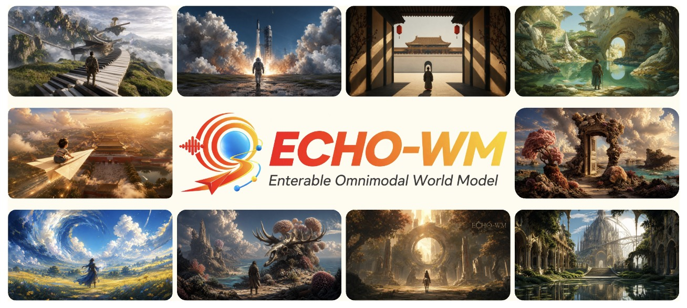
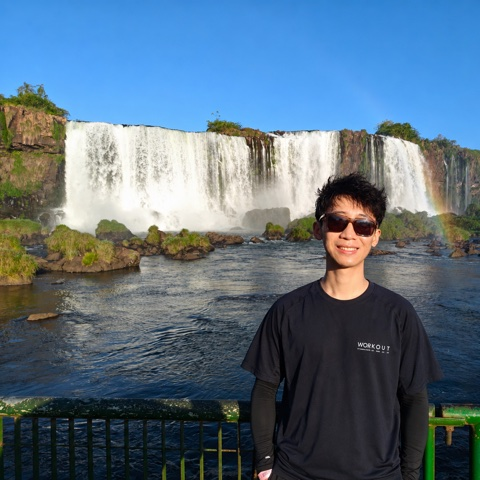

Hello, I am
Yaowei Li
Ph.D. Candidate · Peking University
omni generation · interactive AI · agentic AI
I am a fourth-year Ph.D. candidate in the ADSP Lab at Peking University, advised by Prof. Yuexian Zou. My current research focuses on Omni Generation, Interactive AI, and Agentic AI. Previously, I worked extensively on Multimodal Generation and Real-time AR Generation. I expect to graduate in 2027. Please feel free to contact me if you have any opportunities!

Latest updates
News
Scroll for earlier updates ↓
Released EchoWM and JoyAI-Echo-1.5 for interactive world modeling and long-horizon audio-visual generation.
Released JoyAI-Echo and opened its official code repository.
BrushEdit was published in IEEE TPAMI.
ViewWeaver was accepted to SIGGRAPH 2026 as an Oral presentation.
BlobCtrl was accepted to SIGGRAPH Asia 2025 as an Oral presentation.
Image Conductor was published in the AAAI 2025 proceedings.
NVComposer was accepted to CVPR 2025.
DisPose was accepted to ICLR 2025.
MotionCtrl was accepted to SIGGRAPH 2024.
Unify, Align and Refine appeared in the official ICCV 2023 proceedings.
01 / Research
Selected publications
* equal contribution
02 / Awards
Selected honors & awards
- 2025NeurIPS Top ReviewerNeurIPS 2025
- 2023Outstanding Student ModelPeking University, China
- 2021National ScholarshipTop 0.2% nationwide
- 2020Finalist, Interdisciplinary Contest in ModelingUnited States
03 / Experience
Research experience
Mar 2026 — Present
Joy Future Academy ↗
Research Intern · TGT Program · Shenzhen
Long-horizon streaming audio-video generation
- Mentors
Haoyang Huang, Zeyue Xue, and Nan Duan
- Research
Long-horizon, real-time streaming audio-video generation and world models.
Sep 2023 — Mar 2026
Tencent ARC Laboratory ↗
Research Intern · Shenzhen
Image customization, image editing, controllable video generation
- May 2025 — Mar 2026
- May 2024 — May 2025
Supervised by Zhaoyang Zhang and Ying Shan.
- Sep 2023 — May 2024
Supervised by Xintao Wang and Ying Shan.
04 / Academic Service
Services
Conference reviewer
ICLR 2026 · CVPR 2026 · SIGGRAPH 2026 · NeurIPS 2025 · ACM MM 2025 · ICCV 2025 · ICML 2025 · CVPR 2025 · ICLR 2025 · AAAI 2025 · ECCV 2024
Journal reviewer
IEEE Transactions on Circuits and Systems for Video Technology (TCSVT)